Meet the warriors who represent Vale de Ferro on the field. A squad built with strength, discipline, and a winning spirit.
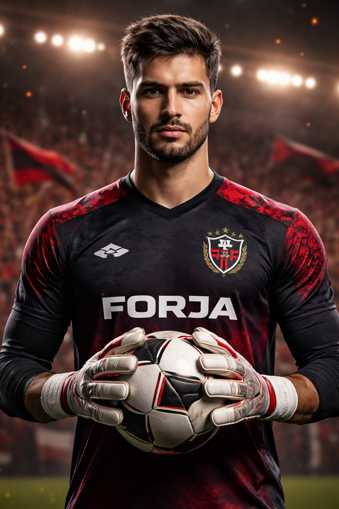
Position: Goalkeeper
Specialty: Quick reflexes and defensive leadership.
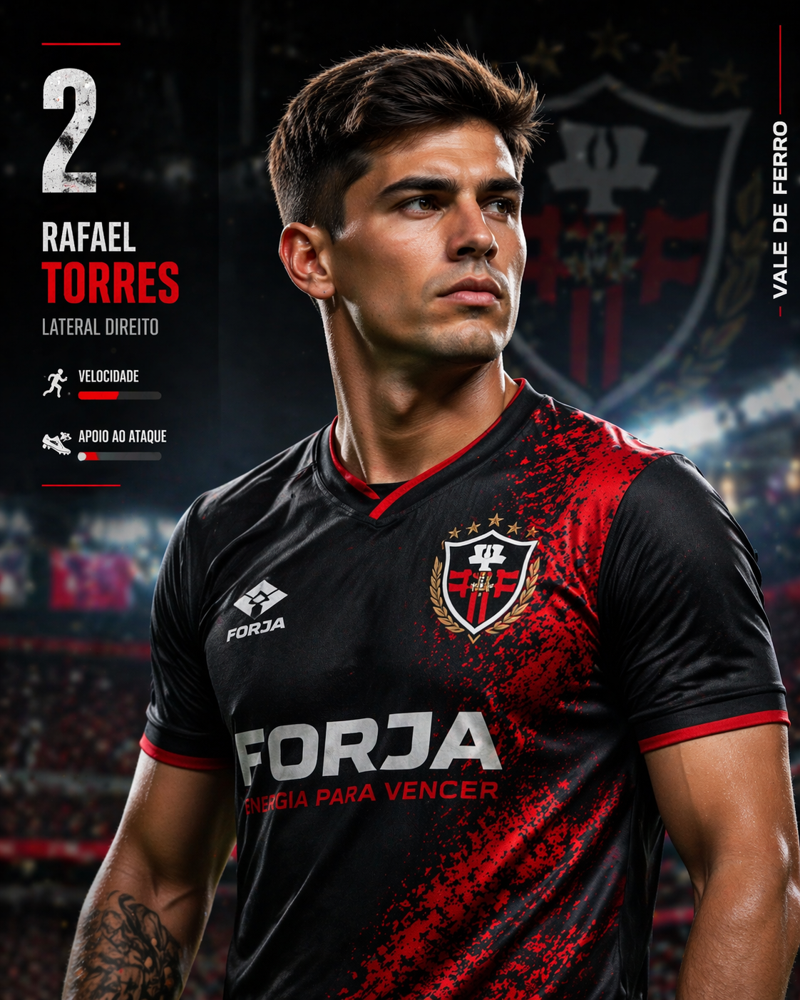
Position: Right Back
Specialty: Speed and attacking support.
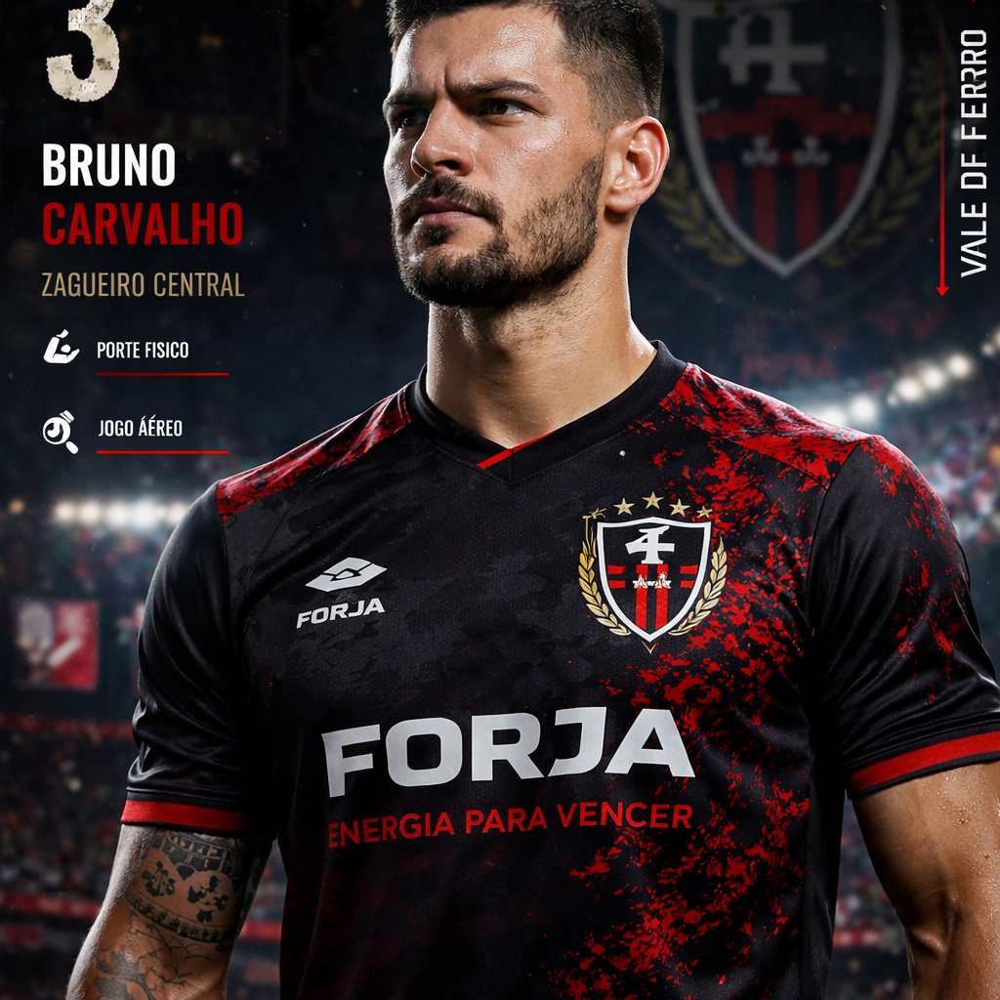
Position: Center Back
Specialty: Physical strength and aerial play.
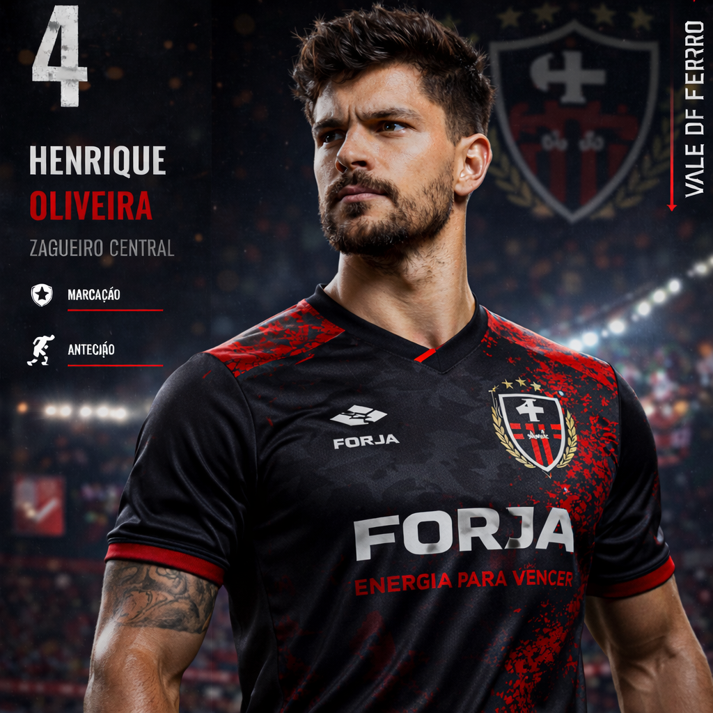
Position: Center Back
Specialty: Marking and game reading.
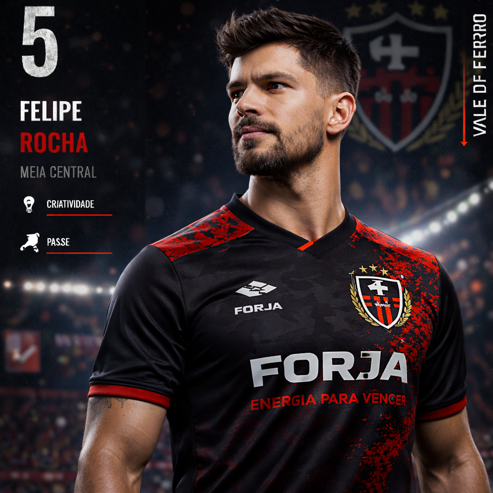
Position: Left Back
Specialty: Accurate crosses.
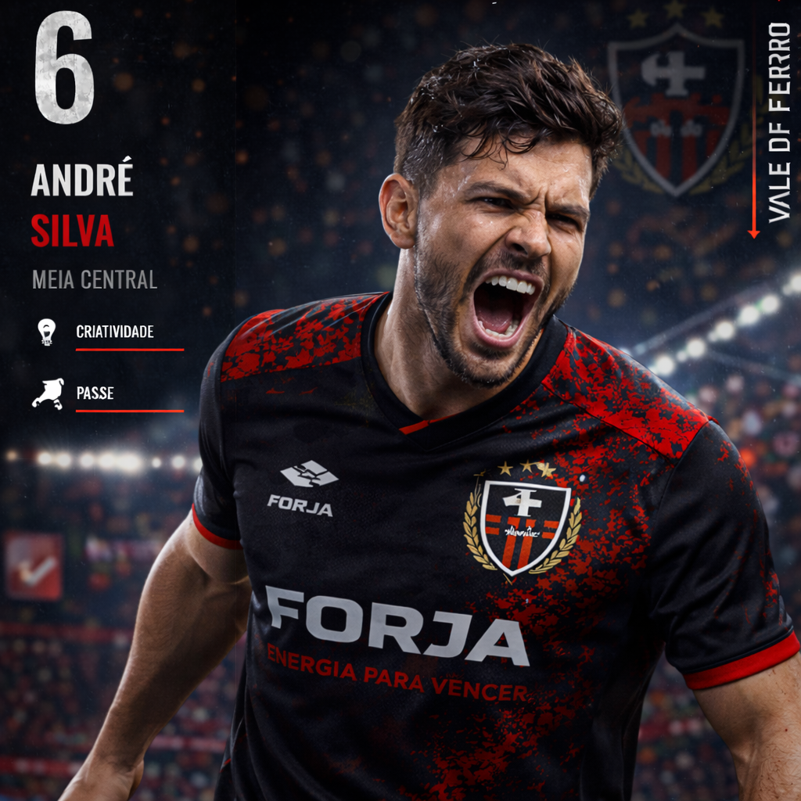
Position: Defensive Midfielder
Specialty: Tackling and midfield control.
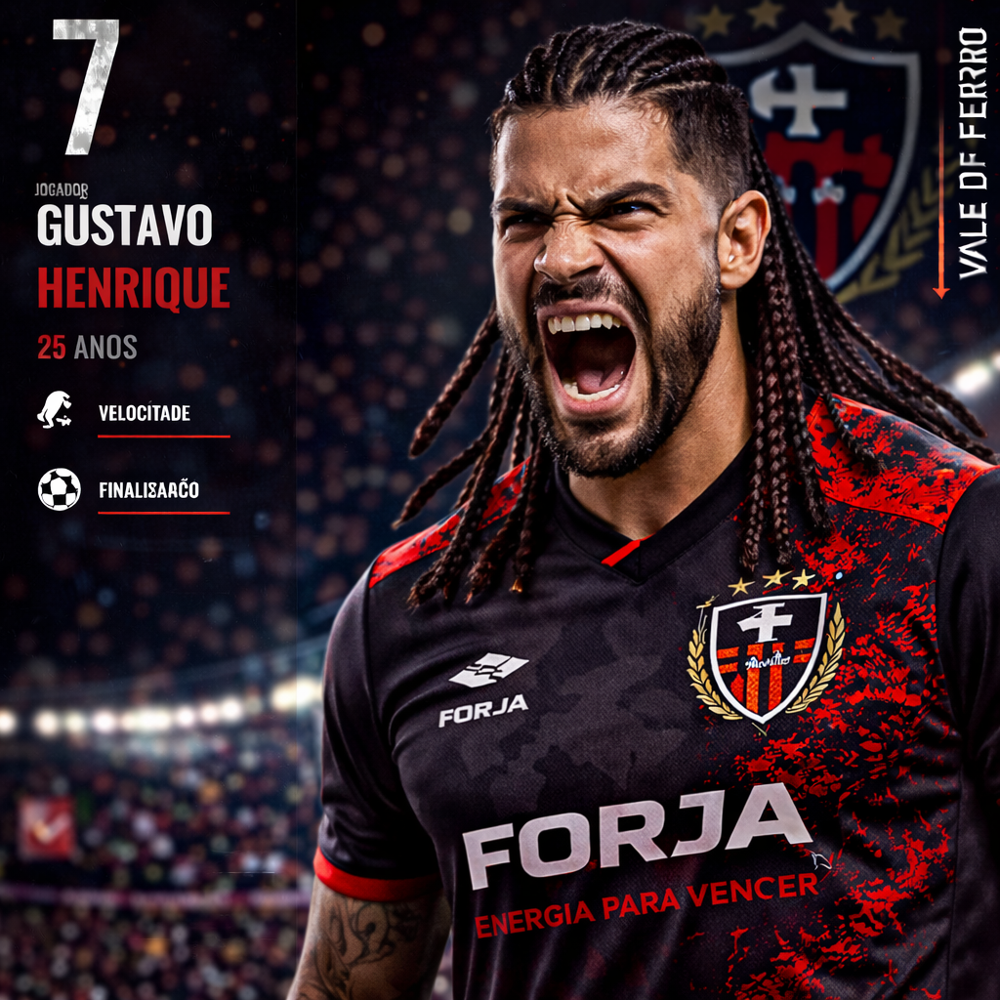
Position: Central Midfielder
Specialty: Organization and decisive passes.
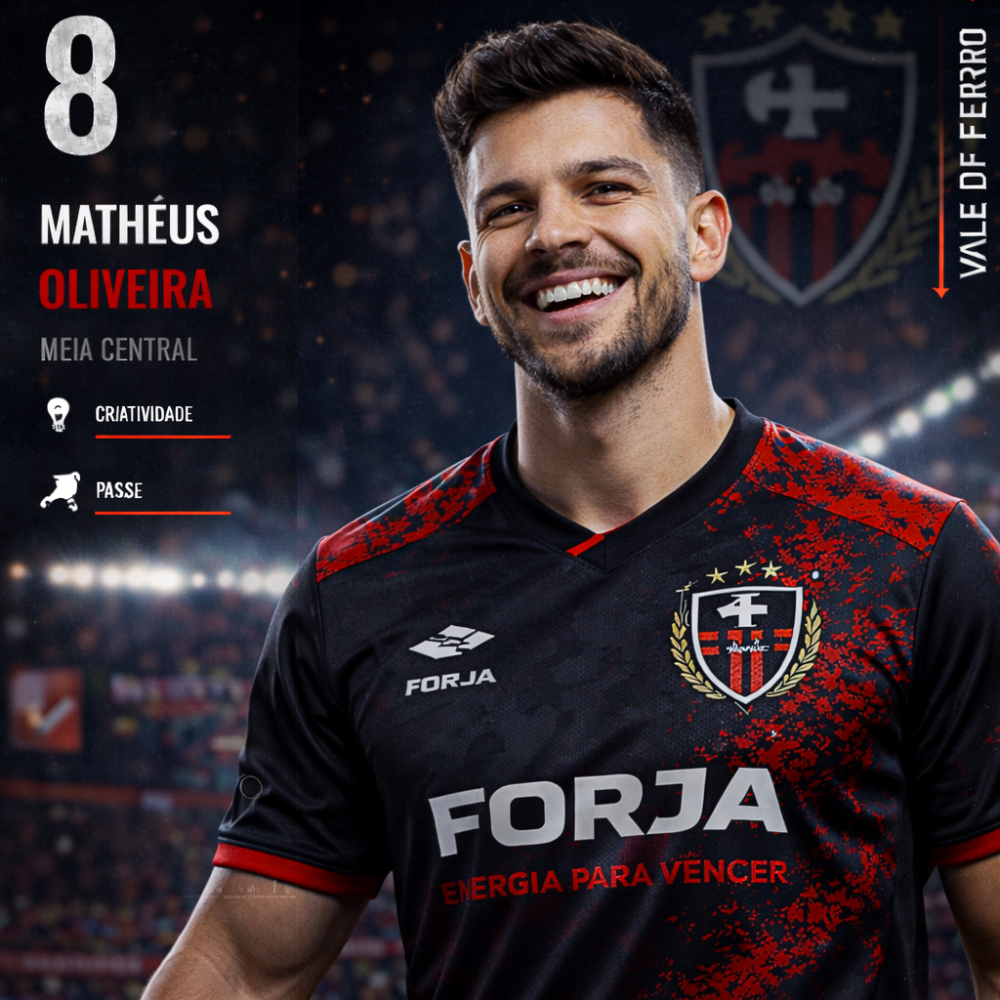
Position: Attacking Midfielder
Specialty: Creativity and finishing.
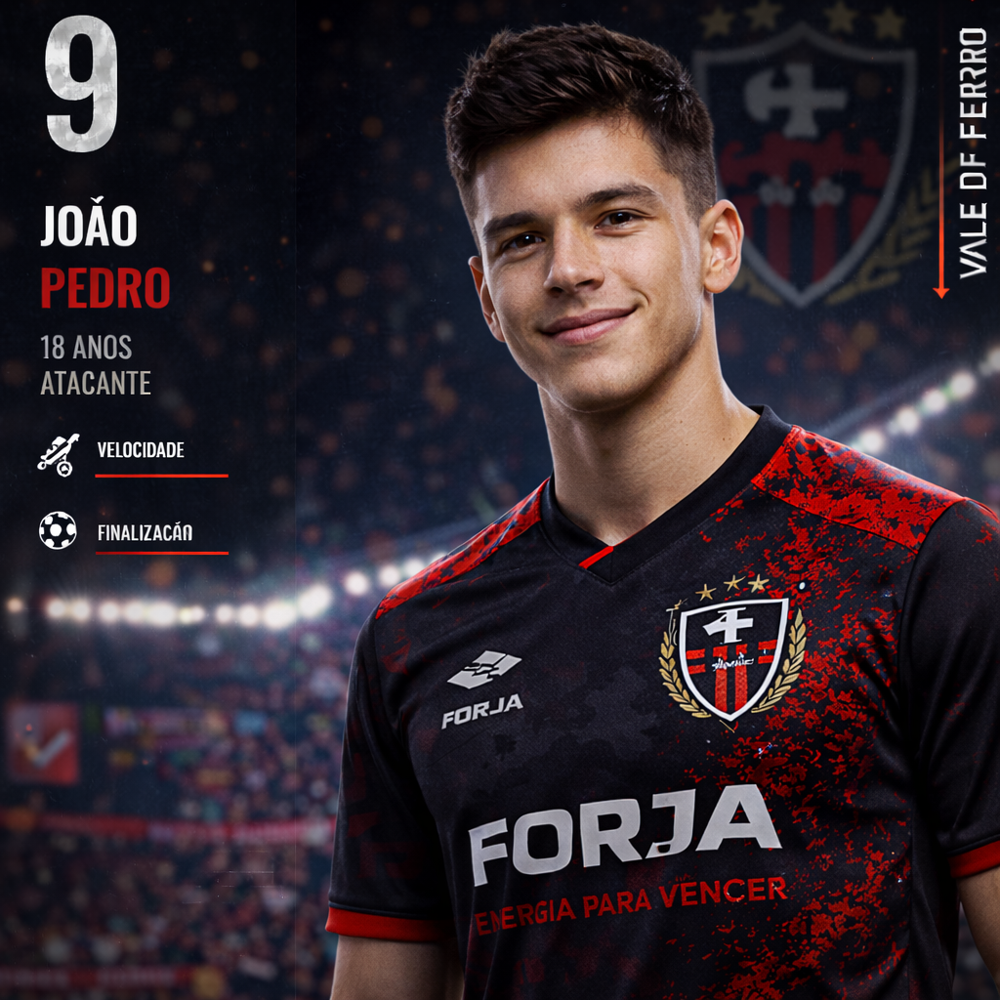
Position: Right Winger
Specialty: Dribbling and speed.
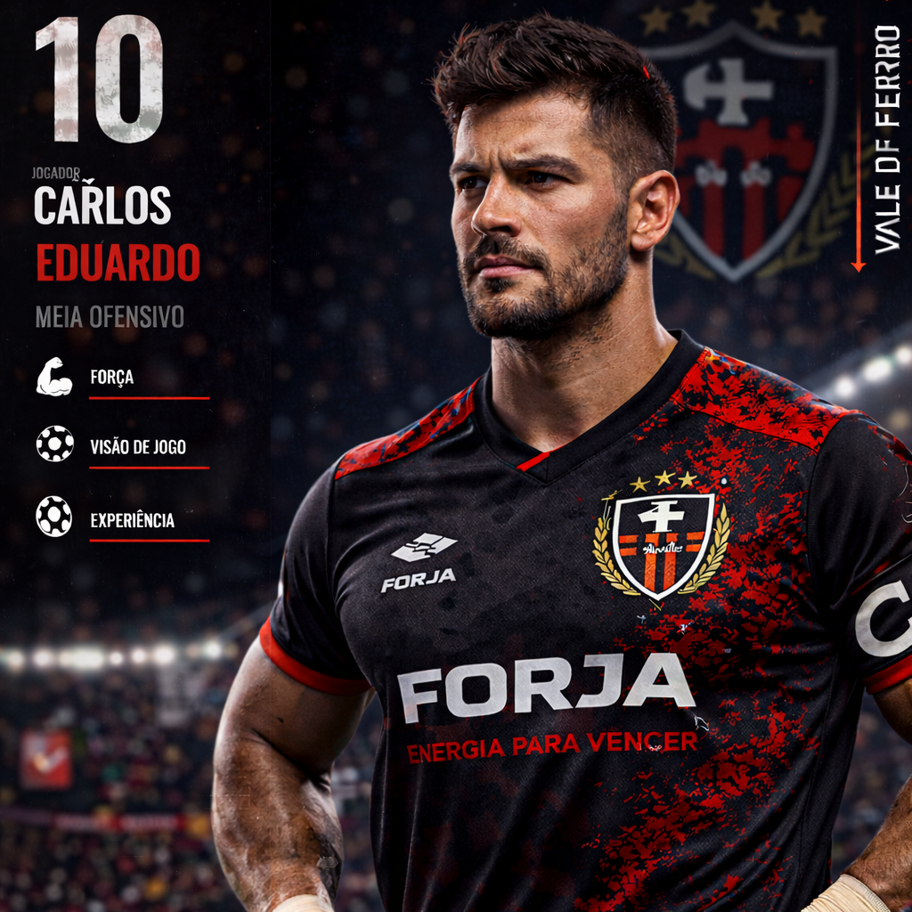
Position: Striker
Specialty: Finishing and box presence.
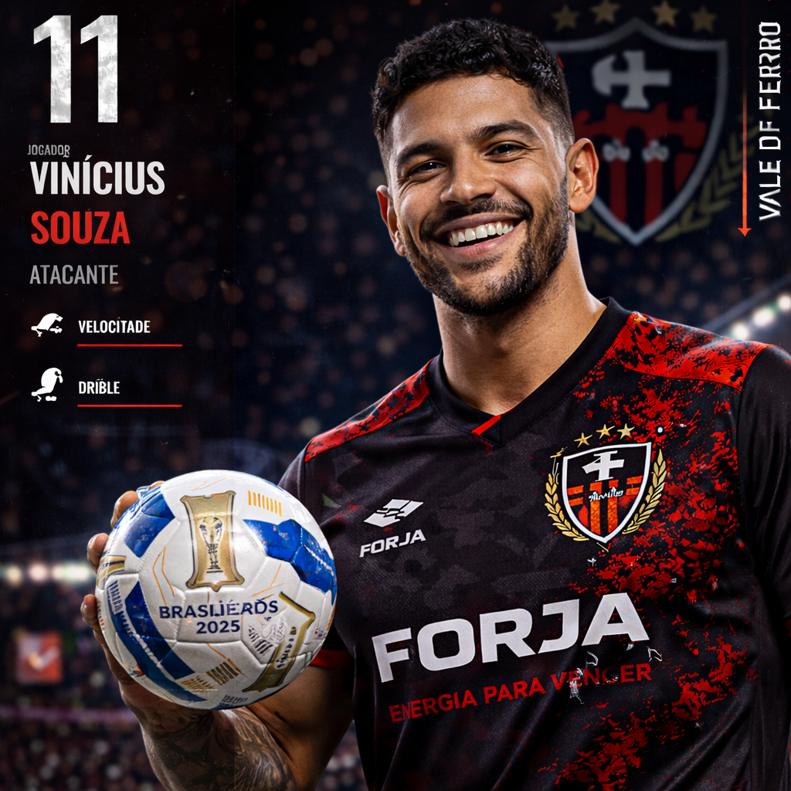
Position: Left Winger
Specialty: Cutting inside and powerful shots.